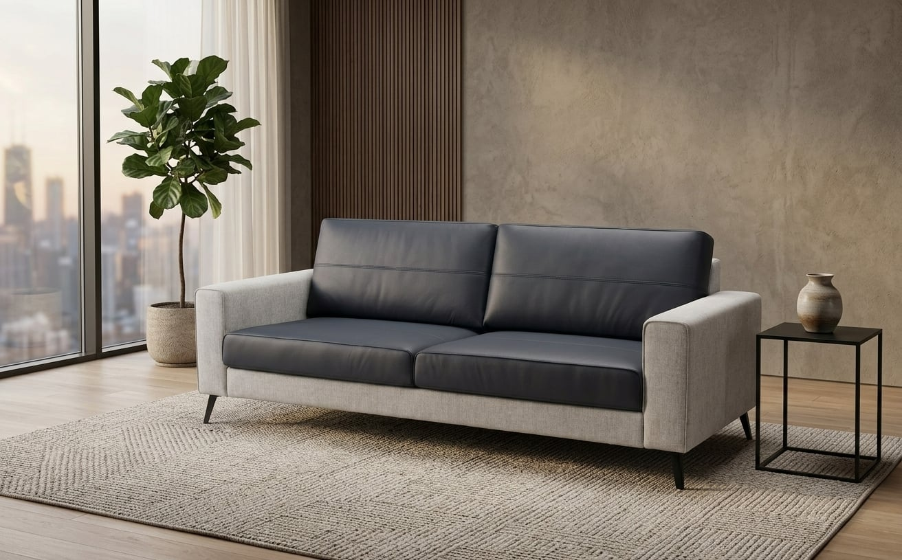
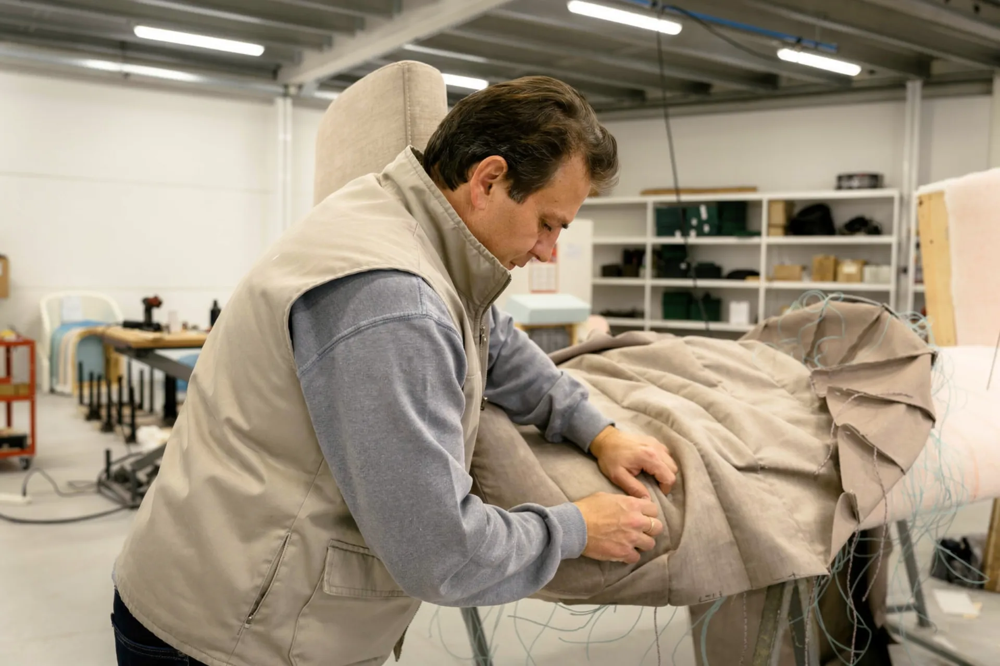

01 / Partir do contexto
Uma casa, um hotel, uma marca e um restauro pedem informação diferente. A escolha reorganiza a referência e a checklist, mantendo a pessoa no seu contexto.
Para uma casa, um hotel, uma marca ou uma peça a recuperar. Organize o ponto de partida do seu projeto de estofos.
Preparar a minha ideia
Escolha o contexto do projeto. As referências e os elementos a preparar acompanham essa escolha.
Sofás por medida a partir de um desenho, esboço ou fotografia. A proposta final é preparada pela equipa após analisar o projeto.
Escolhas temporárias. Esta demonstração não recolhe contactos nem envia pedidos.
O website da Fábrica do Sofá já apresenta produção própria, processos e diferentes formas de trabalhar com a empresa. Esta proposta aproxima essa apresentação do briefing de cada visitante.
Conhecer o website oficial
O website já distingue sofás por medida, hotelaria, white label e restauro. Esta proposta acrescenta um percurso de briefing que adapta a preparação do pedido a cada uma dessas situações.
Uma casa, um hotel, uma marca e um restauro pedem informação diferente. A escolha reorganiza a referência e a checklist, mantendo a pessoa no seu contexto.
O resumo junta o tipo de projeto, a fase e os elementos disponíveis. É uma simulação local, sem orçamento, envio ou recolha de contactos.
Proponho acompanhar uma nova peça com a equipa, do corte à aplicação do tecido e ao acabamento. Uma sequência específica mostraria as decisões desse projeto junto do respetivo percurso.
Na Canvas, fiz a filmagem, a edição e a integração do filme no website. O trabalho da oficina e os acabamentos podem ser vistos junto da apresentação da empresa.
Ver o projeto CanvasSou o Ricardo. Produzo filmes e desenvolvo websites. Esta demonstração mostra a ideia; os conteúdos finais, as filmagens e o âmbito seriam definidos convosco.
Falar com o RicardoWhatsApp · +351 918 989 790
Rua de Santa Cruz, lote 147 · Freamunde, Paços de Ferreira
+351 916 934 641fabricadosofa@gmail.comContactos reais da empresa. O resumo desta demonstração não lhes é enviado.